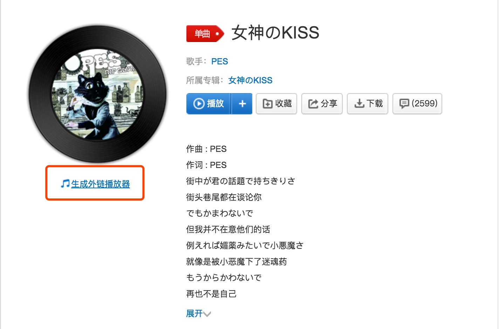
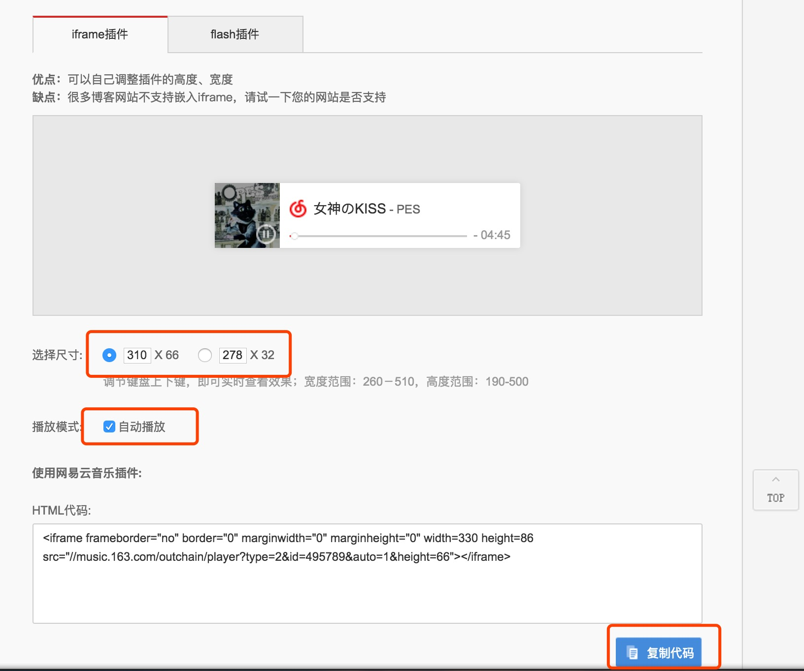

站在别人的肩膀上干活儿的确方便. -刘顿
Hexo命令三部曲
hexo clean清理缓存hexo gORhexo generate生成静态文件hexo dORhexo deploy部署服务器
利用github部署
- 去github上新建一个仓库，仓库名称格式必须为
你的github账号名称+github.io - cd 到你的hexo目录下，clone之.
- 打开
_config.yml文件，找到deploy字段，做如下修改
|
|
博客中的代码高亮
常用语言对应表：（所有支持语言就不罗列了，太多了~）
| 语言 | 标记 |
|---|---|
| Objective C | objectivec, mm, objc, obj-c |
| C++ | cpp, c, cc, h, c++, h++, hpp |
| Java | javascript, js, jsx |
| Markdown | markdown, md, mkdown, mkd |
| PHP | php, php3, php4, php5, php6 |
| SQL | sql |
博客中的图片插入
本地引用-绝对路径
- 在
source中创建images文件夹，通过markdown语法访问
|
|
本地引用-相对路径 （个人推荐）
- 主配置文件
_config.yml，修改post_asset_folder字段值true。修改完成后，当执行hexo new xxx时，会自动创建一个对应博客的文件夹。 - 将对应博客内使用到的图片放入对应文件夹后，使用语法来访问：
|
|
CDN引用
除了在本地存储图片，还可以将图片上传到一些免费的CDN服务中。比如Cloudinary提供的图片CDN服务，在Cloudinary中上传图片后，会生成对应的url地址，将地址直接拿来引用即可。
博客中的音乐播放与视频播放
插入音频的话一般是通过iframe或者flash的。见如下示意图：


博客首屏展示字数->点击查看全部
我现在用的主题是Next，打开主题配置文件_config.yml，搜索auto_excerpt
把enable改成YES，就可以了。
markdown编写过程中遇到的坑。
目前我是买了MarkEditor这款markdown编辑器，用起来效果极佳，很舒服，但是当放到博客上去时就有了一些问题：
- 标题的
##号一定要与后面的标题文字之前起码有一个空格，不然不可以展示出来。 -有序无序的排列后，要再空格一行以上，否则下面继续编辑的文字会有偏移。
markdown中的表格编辑方法